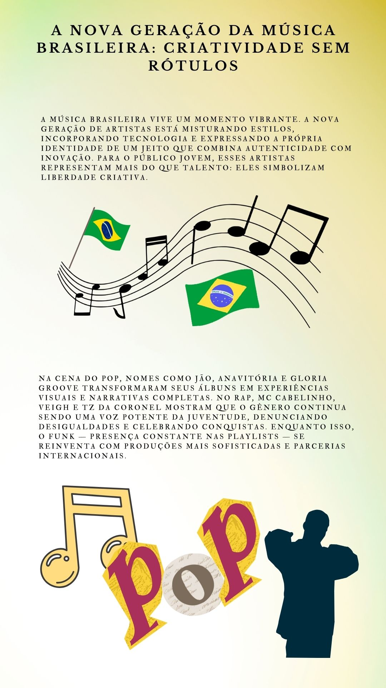
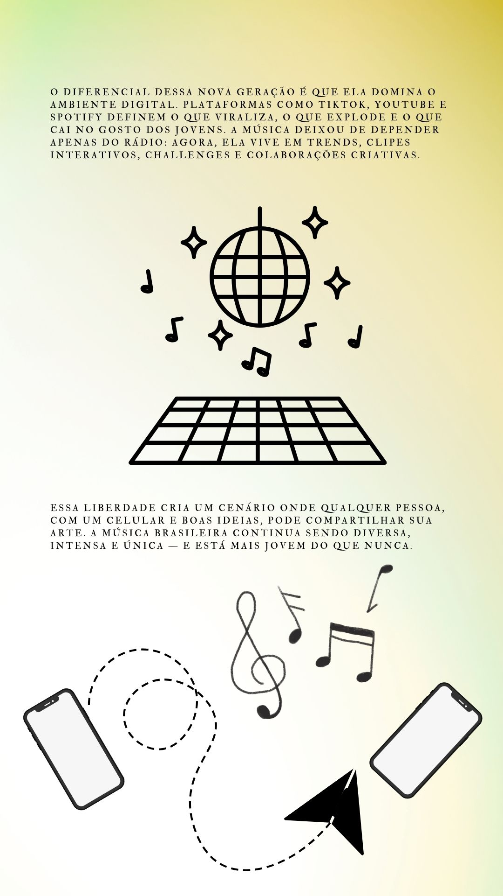
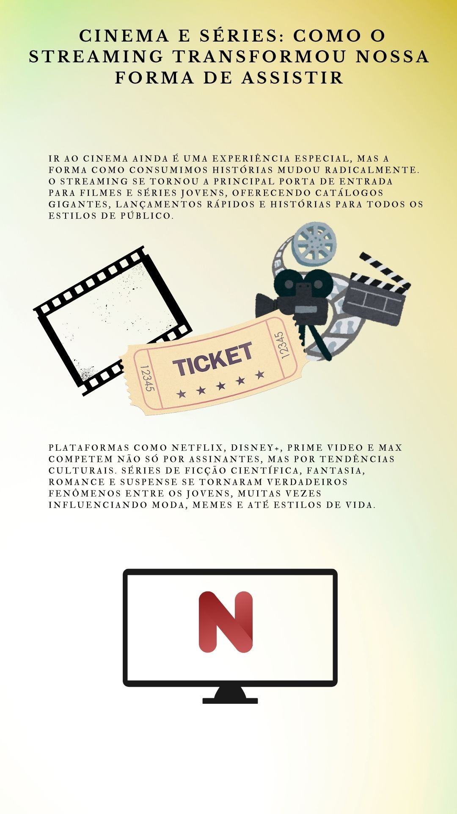
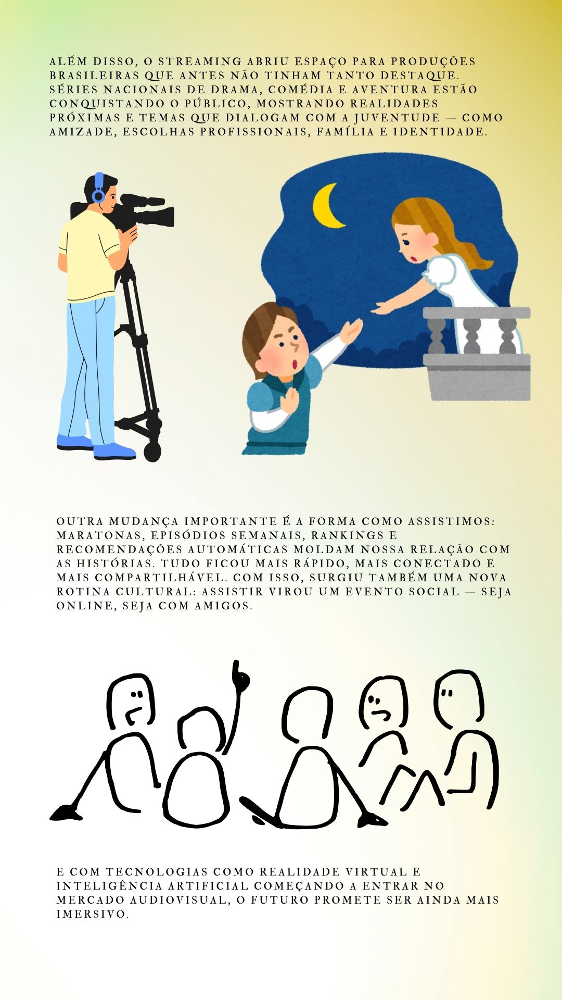
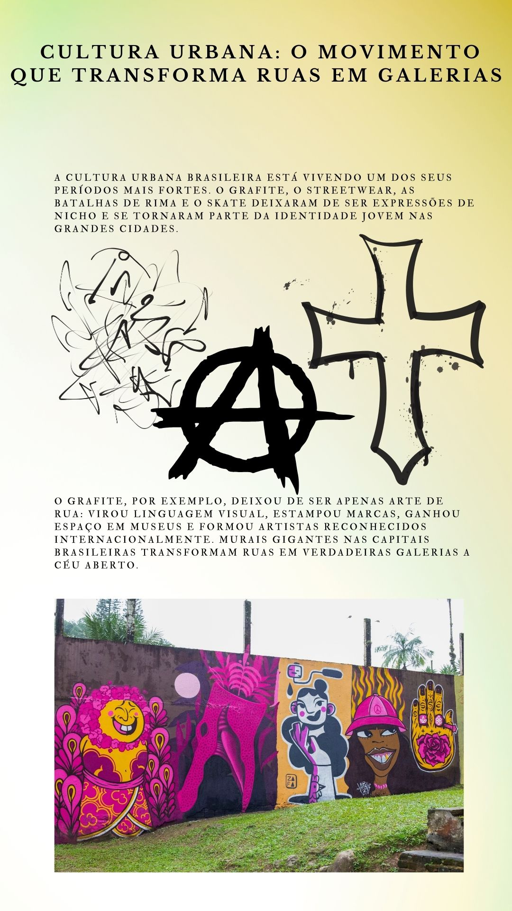
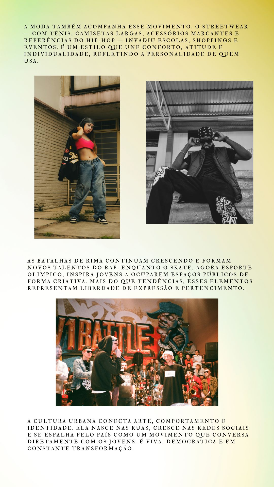

<
E-
JOVEM
seção
Arte e Cultura
Conteúdo sobre arte e cultura.
Nossas Materias
A nova geração da música brasileira: criatividade sem rótulos.
Cinema e séries: como o streaming transformou nossa forma de assistir.
Cultura urbana: o movimento que transforma ruas em galerias.
◆
A nova geração da música brasileira: criatividade sem rótulos
 
◆
>Cinema e séries: como o streaming transformou nossa forma de assistir
Cinema e séries: como o streaming transformou nossa forma de assistir"> Cinema e séries: como o streaming transformou nossa forma de assistir">
◆
Cultura urbana: o movimento que transforma ruas em galerias
 
▲
 E-
JOVEM
E-
JOVEM